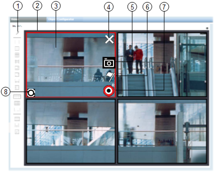
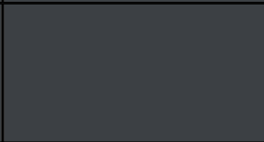
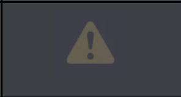
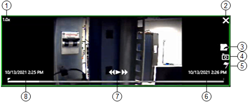
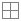
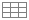
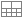

Video View Reference
The video view displays when you select the main Applications > Video folder. (In Operating mode in the Default tab, in Engineering mode in the Video tab.)
It presents a grid-like arrangement of monitors that can be used to display live or recorded video images.
Video Sources and Monitors
You can display video on the monitors of the video view by selecting or dragging-and-dropping video source objects (cameras, camera groups, or sequences) or video recordings. For details see Video Operation Quick Guide. For step-by-step instructions see Video.
Camera connections to managed monitors (those belonging to the station’s assigned monitor group) persist until you change them again. This means that when you next display the video view, images from the last session are retained. For details about managed monitors see Monitors and Monitor Groups Reference.
Video View Layouts
A toolbar lets you switch between different monitor layouts, (3x3, 4x4, 8+2, widescreen, and so on). The layout you apply is specific to your station, but is reset to the 5+1 default at each new client session.
The layout you select will be automatically populated with images from your station’s managed monitors. Unassigned frames in the layout are marked with -- you can still connect video sources to these unmanaged monitors, but the connection will not be persistent.
Conversely, if you select a layout that is too small, for example single view, not all the managed monitors will display.
Controls on Monitors Displaying Live Video
When you hover the mouse over a monitor in the video view, some command icons may become available.

Live Video Monitors | ||
| Item | Description |
1 | Video Command Toolbar | Displays the command icons that allow you to control the video display and select the layout. |
3 | Video View | Displays the live video images from the station’s monitor group. |
2 | Monitor | Displays the live video images acquired from a camera. The monitor corresponding to the currently selected camera is highlighted with a red frame. |
4 | Disconnect camera | Click to disconnect the camera from the monitor. |
5 | Snapshot | Click to take a snapshot of the image currently being displayed on the monitor. The image file is saved in the Pictures folder of the logged-in Windows user. |
6 | Manual tag | Click to set a manual tag and start a video recording (if it is not already running). |
7 | Start recording | Click to start recording. The icon changes to |
8 | Sequence , | Indicates that the monitor is currently occupied by a sequence. denotes the first monitor in the sequence. |


 to indicate that recording is in progress. If an event or tag recording is in progress, you can click the icon again to start a permanent recording.
to indicate that recording is in progress. If an event or tag recording is in progress, you can click the icon again to start a permanent recording. 
Indications on Monitors without Video Images
When you display the video view, you may also see monitors that do not show any video images, as follows:
Appearance of Monitor in Video View | Description |
 | Managed monitor, not connected to any video source. You can connect it to a video camera, and the connection will persist. |
Unmanaged monitor, not connected to any video source. You can connect it to a camera, but the connection will not persist. | |
 | The monitor is connected to a camera, but the camera is disabled in the VMS, or in a fault condition.
In some cases an error message displays in place of the symbol. |
Controls in the Contextual Pane
The currently selected monitor is highlighted with a red border. You can click a monitor to select it. When you select a monitor, the name of its connected camera displays in the Operation/Extended tabs of the Contextual pane, along with properties and commands for that camera. For details see Video Properties and Commands.
In addition, if the connected camera is a PTZ camera, you can control its pan-tilt-zoom settings from the Video Controls tab of the Contextual pane. See PTZ Panel.
Replay Controls on Monitors
Monitors that are playing back recorded video are highlighted with a green border. When you hover the mouse over the monitor, playback controls become available.

Replay Controls | ||
| Item | Description |
1 | Speed and direction | Current speed and direction of playback, as set by the playback controls (play, rewind/fast forward). |
2 | X symbol | Close the playback session. |
3 | Export | Export the recording of the time period being displayed. |
4 | Snapshot | Take a snapshot of the image being played back on the monitor. The image file is saved on the Desigo CC server. See Snapshot Location on Server. |
5 | Tag | Bookmark the current point in the video clip. This creates a playback tag (yellow diamond) in the timeline. |
6 | End time | Based on the post-trigger time (see Global Video Control Commands). It is set to 1 hour for recordings started by Manual and Free tags. Depending on the VMS configuration, video images may not be available as far as one hour later. |
7 | Playback controls | Rewind |
8 | Start time | Based on the pre-trigger time (see Global Video Control Commands). It is set to 1 hour for recordings started by Manual and Free tags. Depending on the VMS configuration, video images may not be available as far as one hour earlier. |

 , play/pause
, play/pause  /
/ and
and  fast forward.
fast forward. Jump to recording trigger time
Jump to recording trigger timeVideo Command Toolbar
A vertical command toolbar is provided on the left side of the video view, just below the name of the selected video object. The following table describes the different toolbar icons.
Edit Mode Icons | ||
Icon | Name | Description |
| Save | Saves the configuration of the currently selected object (camera, group, or sequence, depending on the case). |
| Operate mode | Toggles from Edit to Operate mode. |


Operate Mode Icons | ||
Icon | Name | Description |
| Edit mode | Enter Edit mode to configure the association of system objects with video cameras. This icon is active when the selected monitor corresponds to the camera selection in System Browser, typically the first or main monitor of the layout. |
Single View | These icons allow you to select different monitor layouts. NOTE: You can double-click any managed monitor to temporarily maximize it. This will not alter the currently set layout. | |
 | Quad View | |
3x3 View | ||
4x4 View | ||
5+1 View | ||
7+1 View | ||
8+2 View | ||
12+1 View | ||
8x4 View | ||
6x6 View | ||
3x2 Wide Screen View | ||
 | 3x3 Wide Screen View | |
3+1 Wide Screen View | ||
 | 8+2 Mixed View | |
6+5 Mixed View | ||
8+3 Mixed View | ||

.